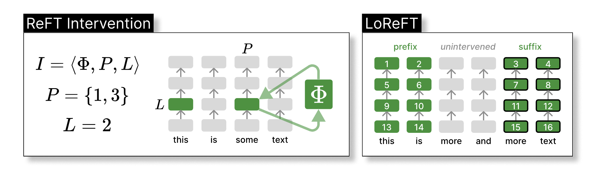
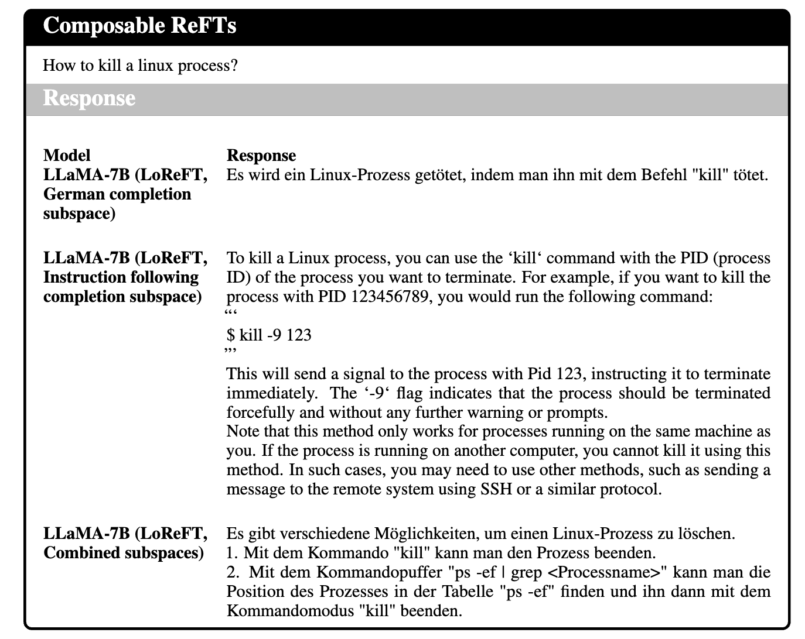

Quick Links

ReFT: Representation Finetuning for Language Models
Why ReFT is different from existing PEFTs?
Representation is weight-less. Instead of training model subcomponents or prefix hidden representations, we learn interventions that edit very few representations. PEFTs lack the notion of time, which usually update representations across all layers and positions.
The notion of time is the key. Unpacking the time sequence, and intervening on select timesteps allow much more flexible representation-based updates. More importantly, the hidden representations of pretrained LMs usually carry rich semantics. So, why not exploit them?
Insights are really from the interpretability works. Instead of adding vectors into representations or scaling them, we edit them by first projecting it onto a linear subspace, and intervening on the subspace projections. Based on past works [1][2][3], we believe concepts are encoded in linear subspaces of the original representations. Thus, we edit subspaces, named our method LoReFT.

In this figure, we illustrate ReFT. The left panel depicts an intervention I: the intervention function Φ is applied to hidden representations at positions P in layer L. The right panel depicts the hyperparameters we tune when experimenting with LoReFT. Specifically, we intervene on representations for 2 prefix and suffix tokens, respectively.
We did not expect ReFT to perform well.
LoReFT intervenes on representations minimally (rank-1 involves about 9K parameters). It can either overfit easily or not learn at all. However, it turns out that LoReFT can be SoTA in some cases.

One particular datapoint from the chart above that is very interesting to think about is instruct-tuning. Not because LoReFT is the SoTA, but because of the fact that the LoReFT we used here is a 4-layer and rank-4 ReFT. In the paper, we also show that instruct-tuning can be done with just 1K examples, 262K parameters, and under 18 minutes! (p.s., you can even go lower).
What does it mean that LoReFT performs well?
Pretraining does all the hard work. One big bet is that the pretraining phase grants all the abilities to the base LM, and finetuning is simply like a style transfer which positions the model to the right output space. Especially for instruct-tuning, it seems like it's mostly likely style transfer.
Intervention on prompt tokens affects long-form generations. This is unexpected. For all of our experiments, we only intervene on the prompt tokens, but we gain control over all generating tokens. Why? It might be that to control model generations, you only need to put a few first tokens into the right states. Your LMs are your super-powered future lenses for decoding tokens from hidden representations.
Linear subspace is powerful, conditioned on model's upstream computations. LoReFT shows linear subspaces contain rich semantics that you can manipulate to steer model behaviors. More importantly, the interventions not only result in changes in the representations but also changes in all the upstream computations (i.e., all the upper right corner computations of the intervening representation). You can think of LoReFT as if it is strengthening or weakening existing causal pathways.
Why does LoReFT work? A case study through a memorisation test.
In short, we are not sure yet. We only qualitatively study its limits with the hope of understanding ReFT better through a memorisation test. We first simplify our intervention function Φ to have fewer parameters than vanilla LoReFT by removing the Wh term and only learning the bias term:

We then train a rank-1 modified LoReFT with a single example. Given a fixed non-English prompt, we train the intervention to recover the start of the book Alice in Wonderland. In other words, we want to test how many words a single rank-1 intervention can "store".

The figure above shows the prefix recovery rate (Rec. %) as exact matches. If it is 100%, it means the text is fully recovered. We vary the number of tokens and intervening layers for each test. Surprisingly, rank-1 LoReFT on LLaMA-1 7B can memorise up to 2048 tokens for almost all layers. This means LMs are very good at unpacking information stored in the representations - LMs are, themselves, super powerful future lenses.
LoReFT operates in vector space and is composable.
PEFTs like LoRA provides some post-hoc cool interpretability usages, such as weight merging [2] that has also been tried in learned model weights as well [3]. Can LoReFT do something similar? Yes, ReFT can be composable in a very interpretable way, since LoReFT learns orthogonal subspaces.
Learn subspaces separately, and then compose. In this experiment, we train two groups of subspaces separately for different tasks: (1) German sentence completion task given an English prompt and (2) English instruction following task. At inference time, we intervene on both groups.

As shown in the example above, our intervened model can start following English instructions but answer in German by composing two abilities together.
Try LoReFT, and customize your ReFT with our pyreft library!
To lower the switch cost from PEFTs library to ReFT, we build a pyreft-native python library, pyreft. We made the interface just like any other PEFTs library. The following code shows how you can configure an intervened LLaMA model:

Onto the future: ReFTs, interpretability, abstraction, and control.
More ReFTs. ReFTs allow us to intervene across different timesteps and locations. So far, we only intervene on prompt tokens. We don't share weights when we intervene across layers. We also have not tried to do schematic interventions where we intervene on a specific causal path (e.g., attention head 8 at layer 7 and position 0 and attention head 9 at layer 8 and position 1). More complex ReFTs or automatic ReFTs would be nice. Having ReFTs that better control the mathematical reasoning ability would be cool.
Interpretability. ReFT relies on insights from work on interpretability, and it may also be able to contribute insights back to that field. We hope ReFT can convince you that neurons, when acting together, can achieve many tasks simultaneously. This also leads us to think whether it is even reasonable to assign a set of functional words to describe what a single neuron encodes, or what a group of neurons encode. They probably even encode different things given different prompts. More importantly, what they encode heavily depends on the upstream computations they are involved in. We hope we can interpret our models with a more active lens. Instead of viewing them as static artifacts that we can prune and understand, we can create useful and interpretable abstractions from them.
Causal abstraction and model control. Alignment training can be done with SFT or SFT plus some reward modeling. We hope ReFT shows that alignment can also be done via intervention training, or editing representations. By finetuning the representations, you are essentially creating an abstraction, i.e., a grey-box model that you have partial control over, given you know how the model will behave conditioned on an intervention. In other words, the more causal abstraction you can do, the more control you gain.
Other thoughts. ReFT achieving SoTA or getting very close to SoTA was unexpected. It means our LMs have so much more power to be explored in their representation space. We also hope ReFT can not only be viewed as another PEFT method to benchmark against for your future work, but also a window we open up for us to study how our LMs work, and what are their limits.
How to Cite
Bibliography
BibTeX
Acknowledgements
We thank Jing Huang for helpful discussion in designing our memorisation tests as well as writing. We thank Chenglei Si, Harshit Joshi, Jordan Juravsky, Julie Kallini, Ken Liu, Rohan Pandey, Jiuding Sun, Leonard Tang, Tristan Thrush, Shengguang Wu, Qinan Yu, Yanzhe Zhang, Amir Zur, and Shiqi Chen for helpful discussion about the project and comments on the manuscript.